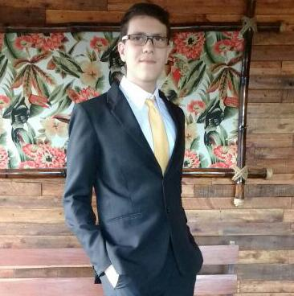

Gabriel de Paula Vasconcellos
Brasileiro, Solteiro, 18 anos
Endereço: Avenida Homero Leite – Casa 1822 – Saudade – Barra Mansa – RJ.
Telefone: (24) 3323-5673, Celular: (24) 98868-4340
E-mail: gabriel.vasconcellos.contato@gmail.com
Formação
- Graduação em Sistemas de Informação – UniFOA – 2018 – 1º Período (Cursando).
- Ensino Médio – Escola Técnica Pandiá Calógeras – Conclusão em 2017.
- Ensino Técnico em Mecatrônica – Escola Técnica Pandiá Calógeras – Conclusão em 2017
- Ensino Fundamental – Colégio Nossa Senhora do Amparo – Conclusão em 2014
Idiomas
- Inglês Avançado – Atual Education & Co. – Conclusão em 2014
Cursos Complementares
- Pacote Office – Microlins – Conclusão em 2013
- Informática – Microlins – Conclusão em 2011
- LEGO (Robótica) – Colégio Nossa Senhora do Amparo – 2012